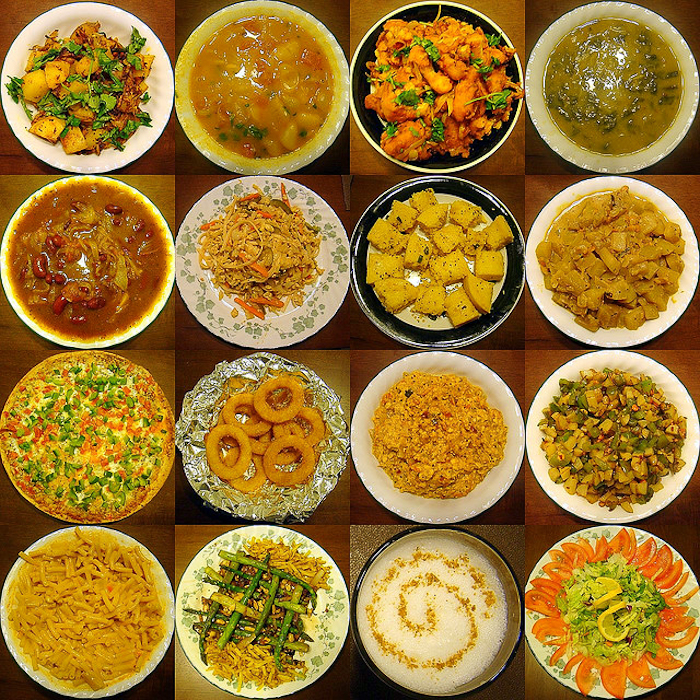
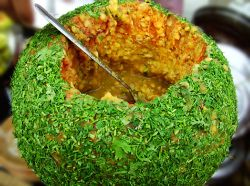

Indian Cuisine

Indian cuisine consists of a wide variety of regional and
traditional cuisines native to the Indian subcontinent.
Given the range of diversity in soil type, climate, culture,
ethnic groups, and occupations, these cuisines vary substantially
from each other and use locally available spices, herbs, vegetables,
and fruits. Indian food is also heavily influenced by religion,
in particular Hindu, cultural choices and traditions.
The cuisine is also influenced by centuries of Islamic rule,
particularly the Mughal rule.
Samosas and pilafs can be regarded as examples.
Northern Dishes
 North Indian cuisine is distinguished by the proportionally high use of dairy products; milk, paneer, ghee (clarified butter), and yoghurt (yogurt, yoghourt) are all common ingredients. Gravies are typically dairy-based. Other common ingredients include chilies, saffron, and nuts.
North Indian cooking features the use of the "tawa" (griddle) for baking flat breads like roti and paratha, and "tandoor" (a large and cylindrical coal-fired oven) for baking breads such as naan, and kulcha; main courses like tandoori chicken are also cooked in the "tandoor," a cylindrical shaped clay oven. Other breads like puri and bhatoora, which are deep fried in oil, are also common. Goat and lamb meats are favored ingredients of many northern Indian recipes.
The samosa is a popular North Indian snack, and now commonly found in other parts of India, Central Asia, North America, Africa and the Middle East. A common variety is filled with boiled, fried, or mashed potato. Other fillings include minced meat, cheese (paneer), mushroom (khumbi), and chick pea.
North Indian cuisine is distinguished by the proportionally high use of dairy products; milk, paneer, ghee (clarified butter), and yoghurt (yogurt, yoghourt) are all common ingredients. Gravies are typically dairy-based. Other common ingredients include chilies, saffron, and nuts.
North Indian cooking features the use of the "tawa" (griddle) for baking flat breads like roti and paratha, and "tandoor" (a large and cylindrical coal-fired oven) for baking breads such as naan, and kulcha; main courses like tandoori chicken are also cooked in the "tandoor," a cylindrical shaped clay oven. Other breads like puri and bhatoora, which are deep fried in oil, are also common. Goat and lamb meats are favored ingredients of many northern Indian recipes.
The samosa is a popular North Indian snack, and now commonly found in other parts of India, Central Asia, North America, Africa and the Middle East. A common variety is filled with boiled, fried, or mashed potato. Other fillings include minced meat, cheese (paneer), mushroom (khumbi), and chick pea.
Eastern Dishes
East Indian cuisine is famous for its desserts, especially sweets such as rasagolla, chumchum, sandesh, rasabali, chhena poda, chhena gaja, and kheeri. Many of the sweet dishes now popular in Northern India initially originated in the Bengal and Orissa regions. Apart from sweets, East India cuisine offers delights made of posta (poppy seeds).
Traditional Bengali cuisine is not too spicy, and not too faint. General ingredients used in Bengali curries are mustard seeds, cumin seeds, black cumin, green chillies and cumin paste. Mustard paste, curd, nuts, poppy seed paste and cashew paste are preferably cooked in mustard oil. Curries are classified into bata (paste), bhaja (fries), chochchoree (less spicy vaporized curries) and jhol (thin spicy curries). These are eaten with plain boiled rice or ghonto (spiced rice). A traditional Bengali breakfast includes pantabhat (biotically degenerated boiled rice), doi-chirey, and doodh-muree with fruits. Bangladesh's cuisine is very similar to that of West Bengal, corresponding to the link between Pakistani and northern Indian cuisine. Fish is commonly consumed in the eastern part of India, most especially in Bengal.
Southern Dishes

South Indian cuisine is distinguished by a greater emphasis on rice as the staple grain, the ubiquity of sambar (also called saaru, a vegetable stew based on a broth made with tamarind and toovar dal) and rasam (also called rasa, a soup prepared with tamarind juice or tomato, pepper and other spices), a variety of pickles, and the liberal use of coconut and particularly coconut oil and curry leaves. The dosa, poori, idli, vada, bonda and bajji are typical South Indian favorites and are generally consumed as breakfast. Hyderabadi biryani, a popular type of biryani, reflects the diversity of south Indian cuisine.
Western Dishes

Western India has three major food groups: Gujarati, Maharashtrian and Goan. There are two main types of Maharashtrian cuisine, defined by geographical circumstances. The coastal regions, geographically similar to Goa, consume more rice, coconut, and fish. In the hilly regions of the Western Ghats and Deccan plateau, groundnut is used in place of coconut and the staples are jowar (sorghum) and bajra (millet) as staples. Saraswat cuisine forms an important part of coastal Konkani Indian cuisine.